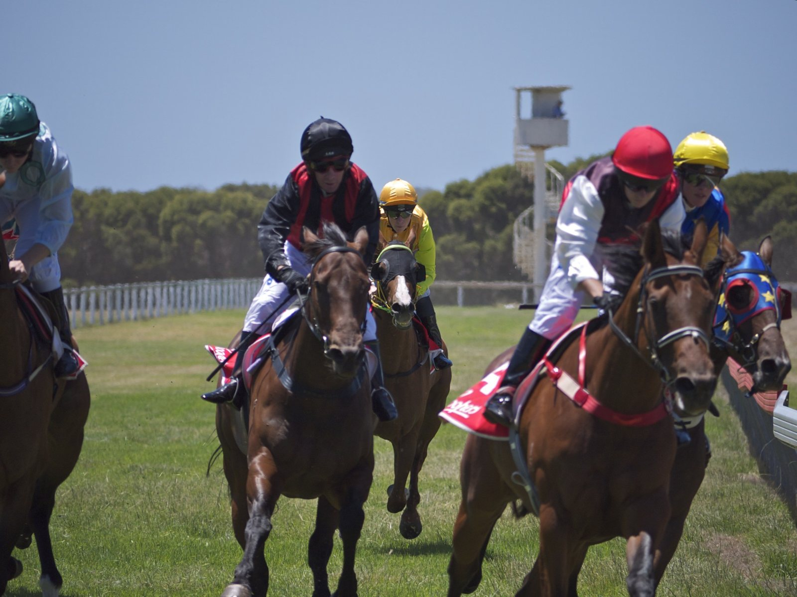

El Vertem Futurity Trophy de Doncaster cierra el sábado el calendario británico de Grupo 1 en liso
El Vertem Futurity Trophy, Grupo 1 reservado a los dos años en milla, se correrá el sábado 24 de octubre en Doncaster y pondrá punto final al calendario británico de carreras de liso de la máxima categoría en 2026.

La carrera, dotada con un bote superior al millón de libras en la última edición, actúa como señal de los dos años con proyección clásica para la temporada siguiente. Aidan O'Brien es su gran dominador reciente: ha ganado nueve de las últimas ediciones y en al menos tres años ha copado más de la mitad del cuadro con potros del cuartel de Ballydoyle. En 2022 la ganó Auguste Rodin, que al año siguiente conquistó el Derby de Epsom y el Breeders' Cup Turf.
Vertem Asset Management, patrocinador titular desde 2020, renovó en 2022 el acuerdo por otros cinco años, por lo que esta edición es la cuarta de ese ciclo. La prueba sigue siendo la última etapa del calendario británico de Grupo 1 en liso, al correrse después del QIPCO British Champions Day de Ascot, que este año repartió sus cinco Grupo 1 el pasado sábado.
El cartel de la jornada se completa con el Doncaster Stakes (Listed) y pruebas negras de las categorías Classic Trial y Beckford. La organización del hipódromo ha anunciado para esta edición la apertura íntegra del County Enclosure y la vuelta de las conferencias de salida de los dos jockeys ganadores de la Champion Jockey Championship, Billy Loughnane y Oisin Murphy, en el paddock del viernes.
El resultado del sábado condicionará las antepruebas de los clásicos de 2027: el 2.000 Guineas de Newmarket, al que la ganadora de la última década de la Futurity Trophy ha llegado como primera o segunda favorita en el 60 % de los casos. Las declaraciones y pesos definitivos se conocerán el jueves por la mañana.
Por Martín Larrañeta